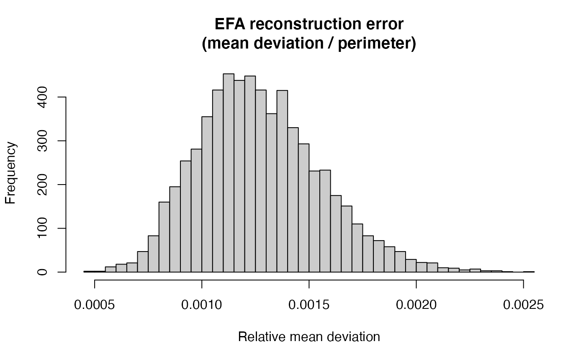
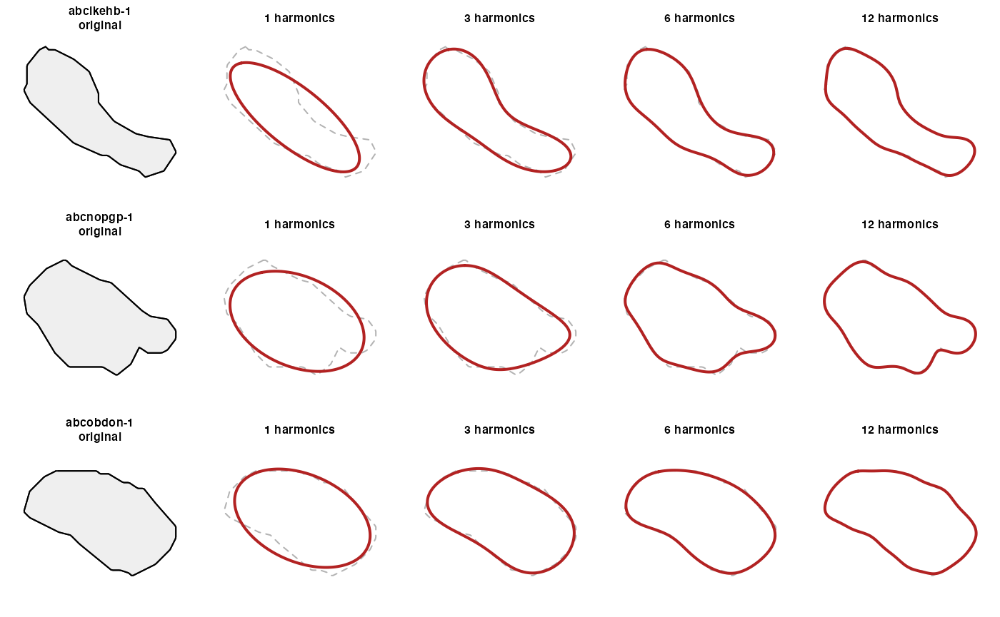
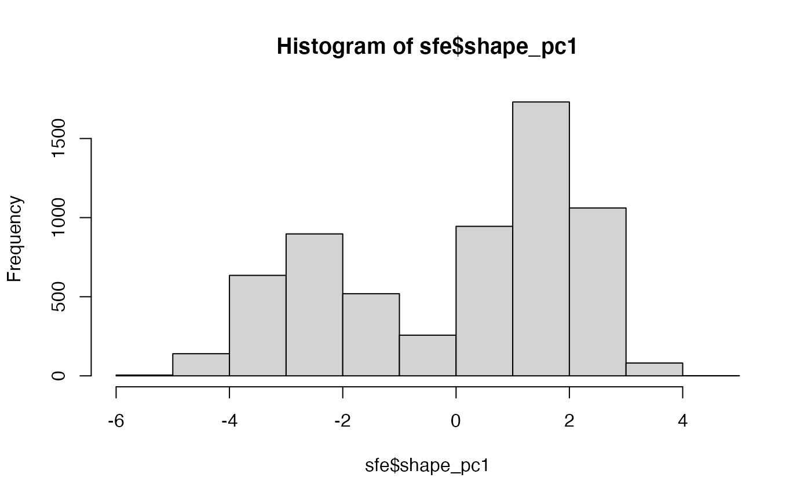

stellfou: exploration of elliptical fourier analysis for segmentations in spatial transcriptomics
Vincent J. Carey, stvjc at channing.harvard.edu
June 14, 2026
Source:vignettes/stellfou.Rmd
stellfou.RmdDemonstration run
Data acquisition
Use SpatialFeatureExperiment to acquire a demonstration Xenium dataset.
library(stellfou)
library(SpatialFeatureExperiment)
library(SFEData)
library(Voyager)
library(SummarizedExperiment) # for assay(), rowData()
# --- Load a Xenium dataset with cell segmentations ---
sfepath = XeniumOutput("v2")## see ?SFEData and browseVignettes('SFEData') for documentation## loading from cache## The downloaded files are in /Users/vincentcarey/SHAPES/stellfou/vignettes/xenium2
sfe = readXenium(sfepath)## >>> Preprocessed sf segmentations found
## >>> Reading cell and nucleus segmentations## >>> Reading cell metadata -> `cells.parquet`## >>> Reading h5 gene count matrix## >>> filtering cellSeg geometries to match 6272 cells with counts > 0## >>> filtering nucSeg geometries to match 6158 cells with counts > 0Pipeline execution
Use a compact approach to modeling all cell boundary traces. The workflow updates the input data structure. The analysis is based on the Momocs package, see the 2014 Journal of Statistical Software paper.
# --- Run the full pipeline ---
sfe # before## class: SpatialFeatureExperiment
## dim: 514 6272
## metadata(1): Samples
## assays(1): counts
## rownames(514): ENSG00000121270 ENSG00000130234 ...
## UnassignedCodeword_0497 UnassignedCodeword_0499
## rowData names(3): ID Symbol Type
## colnames(6272): abclkehb-1 abcnopgp-1 ... odmgoega-1 odmgojlc-1
## colData names(9): transcript_counts control_probe_counts ...
## nucleus_area sample_id
## reducedDimNames(0):
## mainExpName: NULL
## altExpNames(0):
## spatialCoords names(2) : x_centroid y_centroid
## imgData names(4): sample_id image_id data scaleFactor
##
## unit: micron
## Geometries:
## colGeometries: centroids (POINT), cellSeg (POLYGON), nucSeg (MULTIPOLYGON)
##
## Graphs:
## sample01:
system.time(sfe <- run_efa_pipeline(sfe, n_harmonics = 12))## Extracting cell boundaries...## Computing EFA (12 harmonics)...## Successfully computed EFA for 6272 / 6272 cells.## EFA result fields: A, B, C, D, size, theta, psi, ao, co, lnef## Storing in SFE...## 0 cells have NA shape descriptors (degenerate boundaries).## Computing per-cell goodness-of-fit...## Median rel. mean deviation: 0.00124## Median area ratio: 0.9998## Running PCA on shape space...## Done. New reducedDims: 'EFA', 'EFA_PCA'.## New colData columns: 'efa_complexity', 'efa_ellipticity', 'efa_gof_*'.## user system elapsed
## 14.307 1.010 15.337
sfe # after## class: SpatialFeatureExperiment
## dim: 514 6272
## metadata(1): Samples
## assays(1): counts
## rownames(514): ENSG00000121270 ENSG00000130234 ...
## UnassignedCodeword_0497 UnassignedCodeword_0499
## rowData names(3): ID Symbol Type
## colnames(6272): abclkehb-1 abcnopgp-1 ... odmgoega-1 odmgojlc-1
## colData names(17): transcript_counts control_probe_counts ...
## efa_gof_area_ratio efa_gof_power_captured
## reducedDimNames(2): EFA EFA_PCA
## mainExpName: NULL
## altExpNames(0):
## spatialCoords names(2) : x_centroid y_centroid
## imgData names(4): sample_id image_id data scaleFactor
##
## unit: micron
## Geometries:
## colGeometries: centroids (POINT), cellSeg (POLYGON), nucSeg (MULTIPOLYGON)
##
## Graphs:
## sample01:Discussion
Claude gives the following discussion of workflow phases
Geometry extraction: cellSeg polygons from SFE are sf POLYGON (or sometimes MULTIPOLYGON for oddly segmented cells). The extractor handles both cases, taking the largest polygon for MULTIPOLYGONs. The closing vertex (required by sf but not by EFA) is stripped.
Arc-length resampling: EFA assumes uniformly-sampled contours for well-behaved coefficients. Cell segmentation polygons are often vertex-sparse (Cellpose/Baysor may emit 20–50 vertices per cell), so resampling to 200 equally-spaced points by arc length before Fourier decomposition avoids aliasing artifacts.
Coefficient storage: The 4×N coefficients (, , , ) go into
reducedDim(sfe, "EFA"), which fits naturally into the SingleCellExperiment paradigm — you can run PCA on this shape space the same way you’d run it on gene expression. Two derived scalars go intocolData:efa_ellipticity(power fraction in the first harmonic — 1.0 for a perfect ellipse, lower for complex shapes) andefa_complexity(harmonics needed for 99% power).Voyager integration: Since the EFA PCA scores live in reducedDim, you can immediately compute spatial autocorrelation of cell shape using Voyager’s colDataMoransI(), testing whether morphologically similar cells cluster spatially. The example at the bottom sketches this, along with correlating shape ellipticity against gene expression.
One thing to be aware of: Momocs efourier_norm() initializes a, b, and c parameters to (1,0,0) (fixing scale, rotation, and starting point), so if you want to preserve absolute cell size in the shape space, skip normalization and handle alignment separately. For most downstream analyses (clustering cells by shape irrespective of size), normalized coefficients are what you want.
Goodness-of-fit
Examine some quality criteria.
## DataFrame with 6 rows and 2 columns
## efa_complexity efa_ellipticity
## <integer> <numeric>
## abclkehb-1 3 0.968491
## abcnopgp-1 2 0.983748
## abcobdon-1 2 0.989320
## abcohgbl-1 3 0.978474
## abcoochm-1 1 0.991878
## abcoplda-1 3 0.971002
# GoF summary across all cells
gof_cols <- grep("^efa_gof_", names(colData(sfe)), value = TRUE)
summary(as.data.frame(colData(sfe)[, gof_cols]))## efa_gof_mean_dev efa_gof_max_dev efa_gof_symmetric_hausdorff
## Min. :0.008427 Min. :0.03299 Min. :0.03299
## 1st Qu.:0.027264 1st Qu.:0.10612 1st Qu.:0.10612
## Median :0.033008 Median :0.13614 Median :0.13614
## Mean :0.036783 Mean :0.15040 Mean :0.15041
## 3rd Qu.:0.042031 3rd Qu.:0.17785 3rd Qu.:0.17785
## Max. :0.236153 Max. :0.74138 Max. :0.74138
## efa_gof_rel_mean_dev efa_gof_area_ratio efa_gof_power_captured
## Min. :0.000470 Min. :0.9974 Min. :1
## 1st Qu.:0.001069 1st Qu.:0.9996 1st Qu.:1
## Median :0.001244 Median :0.9998 Median :1
## Mean :0.001270 Mean :0.9997 Mean :1
## 3rd Qu.:0.001449 3rd Qu.:0.9999 3rd Qu.:1
## Max. :0.002526 Max. :1.0018 Max. :1
# Distribution of relative mean deviation
hist(sfe$efa_gof_rel_mean_dev, breaks = 50,
main = "EFA reconstruction error\n(mean deviation / perimeter)",
xlab = "Relative mean deviation", col = "grey80")
Visualize a subset of fits
# --- Visualize progressive reconstruction for a few cells ---
boundaries <- extract_cell_boundaries(sfe)
efa_result <- compute_efa(boundaries, n_harmonics = 12)## Successfully computed EFA for 6272 / 6272 cells.## EFA result fields: A, B, C, D, size, theta, psi, ao, co, lnef
plot_efa_reconstruction(boundaries, efa_result,
cell_ids = names(boundaries)[1:3],
n_harmonics_seq = c(1, 3, 6, 12))
Some statistics
# --- PCA on shape space is already in reducedDim ---
# Can be used with Voyager for spatial autocorrelation of shape:
colGraph(sfe, "knn") <- findSpatialNeighbors(sfe, method = "knearneigh", k = 6)
sfe$shape_pc1 <- reducedDim(sfe, "EFA_PCA")[, 1]
hist(sfe$shape_pc1)